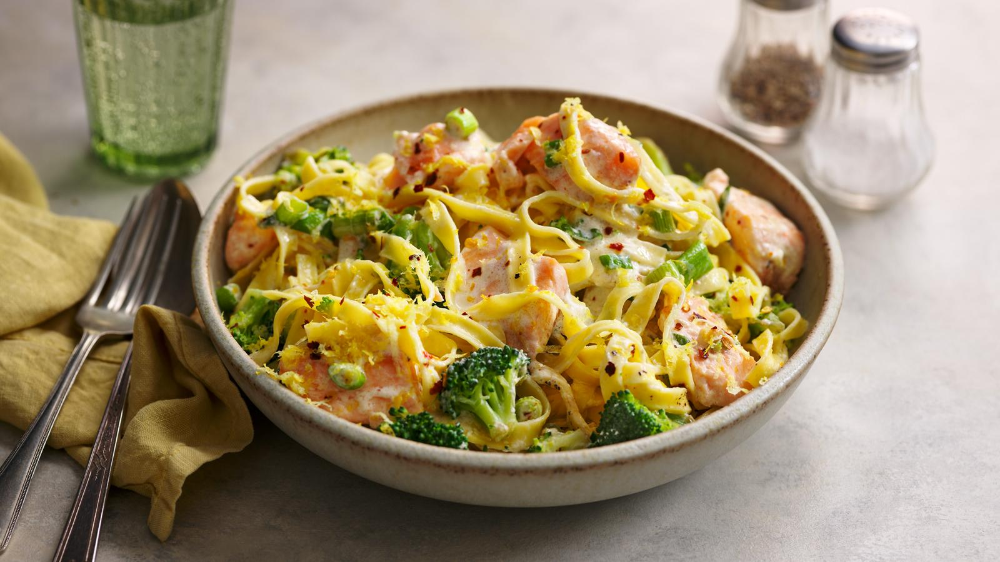

Salmon and broccoli pasta

Description
A simple salmon pasta that’s ready in under 15 minutes. This recipe makes two generous servings or three lighter meals. It’s also very easy to double up.
Based on two servings, each serving provides 869 kcal, 37g protein, 58g carbohydrates (of which 5g sugars), 52g fat (of which 21g saturates), 7g fibre and 1.2g salt.
Ingredients
- 150g/5½oz dried pasta, any kind
- 150g/5½oz broccoli, cut into small florets
- 1 tbsp olive oil
- 4 spring onions, trimmed and sliced or ½ small onion, very finely sliced
- 2 skinless salmon fillets (around 120g/4½oz each), cut into roughly 3cm/1¼in chunks
- good pinch dried chilli flakes (optional)
- 100ml/3½fl oz double cream
- ½ small lemon, finely grated zest only
- salt and freshly ground black pepper
Steps
- Half fill a large pan with salted water and bring to the boil. Add the pasta and cook for 7–12 minutes, or according to the packet instructions until just tender, stirring occasionally. Three minutes before the end of the pasta cooking time, add the broccoli to the water and cook with the pasta for 3 minutes.
- Meanwhile, heat the oil in a medium non-stick frying pan and cook the spring onions, or sliced onion, for 1–3 minutes, or until softened, stirring regularly.
- Add the salmon pieces and chilli, if using, and cook for about a minute, turning the salmon 3–4 times. Add the cream and a ladleful of the pasta cooking water (around 100ml/3½fl oz). Season generously with salt and pepper.
- Bring to a gentle simmer and cook the salmon for 3–4 minutes, turning occasionally (add an extra splash of water if the sauce thickens too much.) Drain the pasta and broccoli and return to the pan. Add the creamy salmon sauce and lemon zest and toss together lightly.